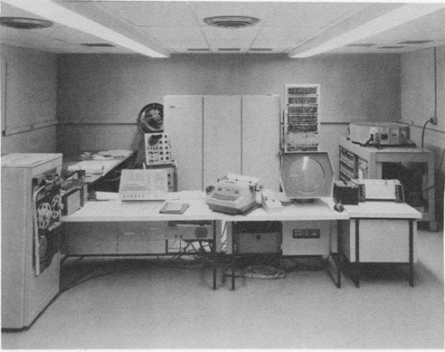
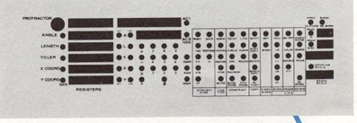
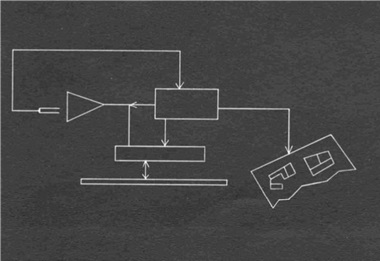
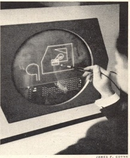

第6章：第一个商业CAD系统
作者注：在麻省理工学院获得土木工程硕士学位后，我被查尔斯·W·亚当斯联合公司雇佣，并从1961年6月到1962年3月担任该章节描述的系统的首席程序员。在服役两年后，我回到公司，并参与了许多其他与图形相关的项目，直到1969年7月。
尽管到1960年时，应用计算机进行工程设计任务的学术工作已经有了一定程度的进展，但很少涉及交互式图形。正在进行的研究工作并不是为了生产商业系统而进行的。如今的CAD技术的根源可以追溯到1950年代和第三章中描述的美国空军的SAGE项目。由麻省理工学院的林肯实验室设计的SAGE系统衍生出了几项重要的技术，包括高性能计算机、大型磁芯存储器和交互式计算机图形。
SAGE系统采用CRT显示器来显示经过计算机处理的雷达数据和其他信息，例如防御武器的位置。操作员可以使用光枪设备识别特定的威胁，然后选择防御武器，例如拦截机或导弹，来对付该威胁。SAGE不仅带来了高效的防御系统，还催生了一批新一代的技术企业。
SAGE计划的关键管理人员之一Ken Olsen离开了林肯实验室，创建了数字设备公司；Norm Taylor则在Itek公司担任高级管理职务，该公司位于马萨诸塞州列克星敦，生产高质量的光学设备，供国防机构使用；Jack Gilmore与另一位早期Whirlwind成员Charles Adams共同创立了Charles W. Adams Associates，这是最早的软件咨询公司之一，位于距离Bedford几英里远的地方。1961年春季，我从研究生学校毕业后加入了Adams Associates，开始从事计算机行业第一次尝试创建商业CAD系统的工作。
大多数CAD行业的历史都归功于伊万·萨瑟兰，他开发了第一个交互式工程设计和绘图的图形系统。他的项目称为SKETCHPAD，也始于1961年，是他在麻省理工学院的博士论文的研究对象（见第3和第4章）。萨瑟兰使用了林肯实验室的TX-2计算机，这是当时存在的最快系统之一。虽然Tim Johnson在萨瑟兰的工作基础上扩展出三维数据模型和图像，但林肯实验室的工作从未被视为商业产品。然而，在1968年，几位从事TX-2图形项目的人离开实验室，创立了Applicon，如第7章所述。
拼凑出完整的图像
1959年末，吉尔莫向泰勒提出了使用计算机图形系统进行工程设计的概念。随后，泰勒在1960年8月说服了Itek的管理层资助开发一种交互式图形系统，理由是它可以用于协助公司的工程师设计光学系统，并可能最终导致一种商业产品，供其他公司进行工程设计和绘图。该项目后来被命名为电子绘图机（EDM）[1]。
奥尔森的数字设备公司被选中提供计算机系统，即新推出的数字PDP-1。实际上，用于EDM原型的实际机器是第二台交付给商业客户的PDP-1。它是一台18位机器，有4,000个字的存储器。它没有浮点硬件，输入/输出仅限于打孔纸带和打字机。性能约为0.1 MIPS。今天售价500美元的个人电脑可能快了20,000倍。现在我们所知道的操作系统还不存在，只有一些实用程序例程可用于编写和调试应用软件。
20世纪60年代初，几乎所有的阴极射线管（CRT）显示器都是刷新型的。图像以一系列线段和控制代码的形式存储在存储器中。它像笔绘图仪一样绘制，使用增量线段制作图纸。打开CRT光束，从一个坐标位置绘制一条线，然后绘制到另一个坐标位置。要开始新线，关闭光束，移动到新的坐标位置，然后重新打开。圆圈、弧线和字母数字字符显示为一系列小线段。为了创建无闪烁的图像，这个过程必须每秒重复30次或更多次。
Itek建造了一个定制的图形处理器，在25英寸的CRT上显示图像，如图6.1所示。大多数硬件设计工作是由亚当斯、泰勒和早先在林肯实验室工作的厄尔·普格完成的。图像存储在由圣保罗明尼苏达州的Telex公司制造的大型磁盘存储器的外围或外部轨道上。该磁盘直径为36英寸，每分钟旋转1,800转，提供每秒30个无闪烁的图像。除了作为显示刷新存储器外，Telex磁盘驱动器还存储约500,000个18位数据字。
显示数据以四位字节的形式存储，其中包含“开始新行”或“将所有后续项显示为粗线”的控制信息。实际的线段以Delta X和Delta Y增量的形式存储，每个轴的最大显示长度为0.04英寸。这种分辨率足够细致，可以显示相对平滑的圆弧、弧线以及文本。该设备的容量为20,000字节的控制和显示数据。
第二个关键组件是光笔，用于选择正在显示的项目或指示屏幕上的位置。光笔有一个小型微动开关，当按下时，设备可以感知光线。当感知到光线时，会向计算机发送一个中断信号，该信号可用于识别正在显示的特定图形元素。其他操作员交互通过15个控制按钮面板进行。

（从左到右：背景中 - 风扇保持计算机冷却，Tektronix示波器，Digital PDP-1计算机，Itek构建的显示逻辑和Telex磁盘驱动器。在前景中 - 纸带读写器，计算机控制台，控制台打字机，控制按钮，CRT显示器，光笔和CalComp绘图仪。）
在很大程度上，我们都是在学习这项新技术的过程中不断摸索前进。有一个事件涉及到磁盘驱动器。这个单元被装在一个Plexiglas柜子里。Pughe或他的一个技术人员有一天用酒精溶液清洁了磁盘驱动器。很少有人知道，粘合记录头的胶水是可溶于酒精的。当磁盘重新启动时，我们很快就在Plexiglas的箱子里看到了一团棕色的尘土。记录头已经分裂，碎片落在磁盘上并刮伤了表面。从那场灾难中恢复过来需要几个星期的时间。
编程EDM
Adams Associates被Itek聘请开发驱动EDM的软件。Gilmore曾与Lincoln Lab的Taylor和Olsen合作，在MIT的Whirlwind计算机、TX-0和TX-2上进行过一些图形开发，详见第3章。基本硬件在1960年中期至1961年6月期间被组装起来，最初在Digital的Maynard设施，然后在ITEK。
当我在那年6月加入Adams Associates时，实际编程工作还很少。虽然Gilmore、Adams和Taylor已经组合出软件的整体结构，但他们还没有开始编写代码，除了测试一些硬件。他们在Adams Associates和Itek还有其他职责，而我被分配负责日常软件开发管理。硬件仍在检查中，EDM软件需要确认硬件是否正常运行，特别是定制的显示处理器。
如前所述，PDP-1没有操作系统。基本上，我们创建了一个应用专用的执行程序，处理系统函数，包括中断管理，这些函数今天由操作系统如UNIX和Windows处理。我们还必须编写许多基本的图形例程，包括将图像裁剪到适合显示区域并显示基本的几何实体。事实上，我们甚至不得不编写自己的三角函数以及许多用于调试程序的工具。在Gilmore的指导下，实现了一个非常系统的方法来编程EDM。这是几年前“结构化编程”这个术语流行之前的事情。
一位高级Digital工程师是曾与Gilmore在Lincoln Lab工作的Ben Gurley。有一次星期天，当我试图检查一些新的软件时，我遇到了PDP-1的纸带阅读器的问题。当时还没有24/7服务，所以我给Gilmore打了电话。他打电话给Gurley，后者来到了Itek。他没有带任何工具，但他用一块透明胶带修好了读卡机。它在当天的剩余时间里工作得足够好，我能够调试一些软件。不幸的是，Gurley在1964年被名叫David Blumenthal的精神病前技术人员杀害。
在这个项目中，所有PDP-1编程都是用汇编语言完成的，逐条指令。程序是手写的，然后使用类似打字机的Flexowriter转换为打孔纸带。这些程序然后使用Bolt Beranek and Newman的Ed Fredkin编写的汇编程序进行组装（转换为机器语言）。（BBN后来因为为ARPANET，今天的互联网的前身，做了大量编程而闻名。）调试是使用控制台开关和控制台打字机的组合完成的。
用户界面有所不同
除了总体管理软件开发工作之外，我个人编写了最初的执行例程和大部分早期显示功能。几何图形创建是由Murray Sherry博士完成的，他的真正专业是基于计算机的语言翻译，而Gilmore则处理了最棘手的软件部分——如何跟踪光笔在空白显示器上指示新位置。后者通过在屏幕上显示一小组点的模式来完成。当操作员移动光笔时，计算机会感知到正在识别的点的组合，然后沿着该方向移动该模式。这个过程会不断地重复，直到操作员放开光笔上的小开关，表示新的几何项应该从那个点开始。Gilmore还设计和编程了用户界面的许多其他方面。
我负责的一个执行例程是确定光笔何时识别到现有项的光线的例程。通过比较感知到光线的时间和上述大型磁盘驱动器的显示轨迹上的数据，可以确定操作员指向的具体项。这个过程必须非常快速。回顾我45年后仍然拥有的程序清单，我可以看到我为了应对这些时间限制而努力将执行此操作的关键程序循环从五个指令缩减到四个指令。
使用EDM创建绘图
命令输入是通过推按钮和光按钮的组合完成的。后者涉及在CRT的下部显示一组点的模式。一个与显示点相对应的孔的模板被放置在屏幕的这个部分上，通过用光笔选择其中一个点来启动功能。图6.2显示了一个早期版本的叠加。操作员可以使用这个模板来选择特定操作，输入如坐标值之类的数据，选择要创建的元素类型，输入线的长度或旋转所选对象。基本上，它是一个固定的菜单项列表，尽管Gilmore和Taylor建议EDM的生产版本可以有多个具有不同功能的边缘照明面板。十年后，许多系统使用平板电脑和数字化器上的多个菜单叠加来完成类似的任务。

光笔软件有时会表现出意外的行为。在为几位Itek高管进行首次重大演示之前，吉尔莫和我通宵修正最后一分钟的软件漏洞。他说话，我当操作员。可能是因为紧张或缺乏睡眠，我开始在键盘上轻敲光笔。很快，系统就开始执行各种未经请求的操作，我们感到困惑，因为在客人到来之前，它一直运行得很好。
后来发现，每次我轻敲光笔时，它就会向计算机发送一个中断信号，然后计算机会将该中断信号解释为一个操作请求。软件变得完全混乱，我认为我们不得不重新加载系统才能使其正常运行。
EDM系统能够绘制直线，可以被限制为水平或垂直，也可以插入任何所需的角度的线条。角度可以以数字方式定义，或者用户可以选择在显示器上选择两个点来定义角度。
点可以通过输入坐标值、用光笔指定屏幕位置或选择现有线的端点来确定。该系统还处理圆、弧、多边形、自由形线和文本，使用的是最早的实体表之一的实现。
对象可以移动、复制、旋转或反射。最初，EDM被设置为使用A、C和E尺寸的图纸，采用一种刚性的方法来显示图纸的四个象限之一。在EDM软件开发过程中，控制按钮和光按钮面板布局都经常更改，因为我们了解到可以做什么和不能做什么。
1961年秋天，我参加了在马萨诸塞州莱克星顿的一家酒店举行的Digital Equipment Computer Users Society (DECUS)的第一次会议。那里可能有十二到二十个人。我非常清楚地记得那一天，因为有一场飓风擦过新英格兰海岸，一整天风声呼啸，而我们则在讨论如何编程PDP-1。DECUS最终成为最大的行业用户组之一，到1991年已有超过10万名成员。Digital生产了50台PDP-1，每台售价约12万美元。
推销EDM
1962年3月，我开始服役于军队，履行ROTC的承诺，这是不可再拖延的。弗兰克·格里多雷克斯几个月前就加入了这个项目，接管了我之前做的大部分工作。到那时，我们能够创建、展示和编辑简单的图表，如图6.3所示。二十年后，Autodesk的AutoCAD原型也处于同样的阶段。（详见《The Autodesk File》第63页。）

1962年初，Itek开始积极推销EDM，由爱德·菲茨杰拉德负责这项工作。公司为EDM准备了一份销售手册，回顾起来对系统的能力过于乐观。然而，其中一句话清楚地预示了这项技术可能的发展方向。
“通过通信网络，能够在数小时内解决关键设计问题，而不是需要数天或数周的时间，通过这个网络，可以在分离的位置举行设计会议，并在会议结束时提供包含达成的共识的相同图纸。”[2]
这听起来很像最终在30多年后推出的协作设计工具。
Itek的市场定位为EDM打破了用户和计算机之间的语言障碍。按照他们的术语，以前需要程序员将工程问题简化到计算机可以解决的程度。现在，用户可以通过图形界面与计算机进行通信，而无需精通编程。
几篇文章在向公众描述EDM时使用了这个比喻。
《时代》杂志引用了附近的空军剑桥研究实验室（AFCRL）的科学家查尔顿·沃克的话：“计算机不喜欢与人打交道……它们只是不理解我们的语言。”文章继续说：“通过光电笔，EDM的操作员可以在一个看起来像平板的，不会闪烁的电视屏幕上图形化地制定工程问题（而不是将其简化为方程式）。”[3] 《时代》杂志刊登了吉尔莫尔操作EDM的照片，清晰地显示了覆盖在屏幕底部显示的控制灯上的塑料叠层。

类似的文章出现在1962年12月30日的《波士顿星期日先驱报》上，也使用了Itek的计算机语言障碍主题。这篇文章比早期的《时代》文章更为技术化，因为它相当清楚地描述了吉尔莫尔实施的光笔跟踪方法。该文章还关注减少纸质文档的数量。
“它还使得将用于制造太空时代设备的设计蓝图的吨位，从几个卷轴的磁带减少到几个卷轴，使得数以千计的单独设计立即可用。”[5]
很明显，吉尔莫尔、泰勒和菲茨杰拉德对这种类型的技术有很好的掌握。其中一个问题是，如上所述的系统的价格标签接近50万美元。那是1962年的一大笔钱。
Itek向Control Data销售EDM技术
在1962年末，Itek意识到作为国防承包商，将难以商业化EDM。泰勒与Control Data Corporation谈判达成一项协议，从ITEK收购EDM技术和相关专利。在此之前，Itek向AFCRL的沃克出售了一套系统。此安装被称为DX-1系统，软件为Digigraphics Display Program。总体配置与原型EDM相似，但Telex磁盘被Bryant磁鼓存储器所替代。还添加了两个脚踏板以增加操作员互动。存储在磁鼓上的显示数据使用六位字节，而不是原型EDM上使用的四位字节。这使得DX-1能够显示大约2000英寸的图纸，而早期EDM只能显示大约800英寸。
Digigraphics软件与在EDM上实现的类似，但具有一些重要的扩展。特别是，现在更容易在各种比例下显示所选区域的图纸。DX-1系统包括与配备彩色显示器的第二台PDP-1计算机的接口。Adams Associates的Digigraphics软件项目负责人是David Eisenberg，他的数字对应物是Ed DeCastro，后来几年后创立了Data General。
在CDC从Itek那里收购EDM技术之后，它在附近成立了一个名为CDC Digigraphics Division的新业务实体。Adams Associates被聘请将数字PDP-1软件转换为功能更强大的CDC 3200计算机系统。参与此项活动的关键CDC员工之一是Thurber Moffett。该公司开发了自己的Digigraphics工作站，CDC 274图形控制台，可以显示2000英寸的图形或1800个文本字符。
CDC努力使这项技术商业化，但它是时代的先驱。其功能不足以完成大多数实际的设计和制图任务，而使用笔画刷新图形会导致系统过于昂贵。几个系统被卖给了航空航天公司，包括洛克希德和马丁·玛丽埃塔（后来合并为今天的洛克希德·马丁）。该公司还收到了美国海军的几份研究合同，以解决潜艇设计问题，特别是涉及船上管道的问题。海军希望能够切开潜艇并查看所有管道、管道和管路是否合适。航空航天客户的一个问题是，当CDC仍在努力完善计算机辅助绘图时，他们想专注于基本设计。
几个系统也被卖给了半导体制造商，因为它们可以处理Digigraphics系统能够产生的简单图形。几年后，CDC得出结论，这项业务是不赚钱的，并关闭了Digigraphics操作。
也许对EDM重要性最好的描述是杰克·吉尔莫在1990年的观察：“……我的意思是，我们不得不等待近15年，直到硬件追上我们，我们才能拥有一个合理的工作站，可以将一些高端图形放入其中。”在1960年代中期，EDM和Digigraphics的工作导致Adams Associates（后来称为Keydata Corporation）被Largo Oil and Transport（现在是ExxonMobile的子公司）聘请实施基于图形的炼油厂运动和控制系统。操作员可以用光笔指向一系列的储罐、阀门、泵和管道，并告诉系统使用选择的路由将指定数量的物料从一组储罐移动到另一组。我花了将近四年的时间管理这个项目的软件方面，其中包括由Information Displays Incorporated提供的显示系统，当时Carl Machover是该公司的执行副总裁。杰克·吉尔莫在1960年代末成为Keydata的总裁，并经营该公司多年，直到1974年加入Digital，他在该公司的办公自动化业务活动中发挥了重要作用，直到退休。Itek公司最终被Litton Industries Incorporated出售，然后于1997年被Hughes Electronics Corporation收购。有趣的是，在1960年代末，本书中深入讨论的两个重要的CAD供应商，Applicon和Computervision，距离Digigraphics所在地仅有几英里。
[1] A number of the details herein come from a transcript of a panel discussion held at Digital Equipment Corporation on June 5, 1990 with Jack Gilmore and Norm Taylor participating along with several of the other individuals mentioned in this chapter.
[2] Itek sales brochure
[3] Beating the Language Barrier, Time, March 2, 1962, Pg. 74
[4] Beating the Language Barrier, Time, March 2, 1962, Pg. 75
[5] Leland, Timothy, “Computer Language Barrier Broken,” The Boston Sunday Herald, December 30, 1962, Pg. 46
[6] Taylor subsequently worked for CDC as a technical assistant to Chuck Norris, the company’s CEO, until the late 1960s. He then was a consultant at Arthur D. Little and at his own firm, Corporate Tech Planning until he retired in the late 1980s.
[7] CDC records available at Charles Babbage Institute, University of Minnesota, Minneapolis.
[8] Panel discussion held at Digital Equipment Corporation on June 5, 1990